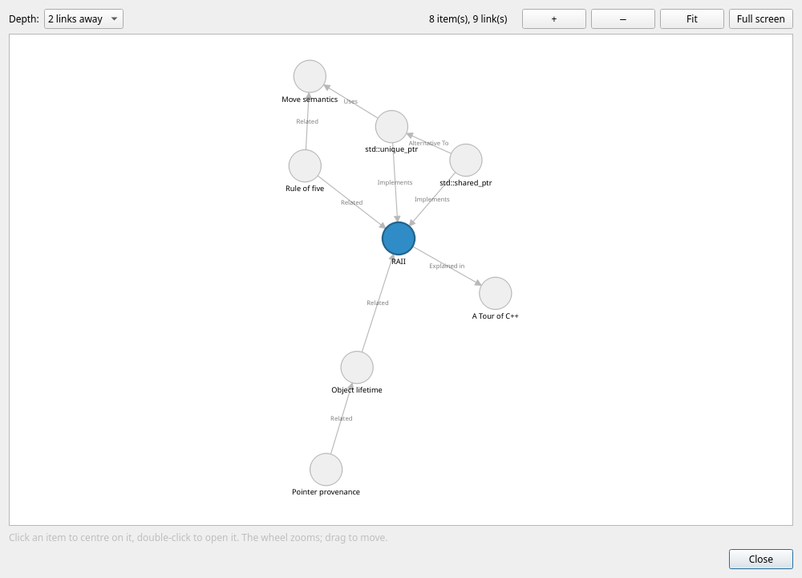
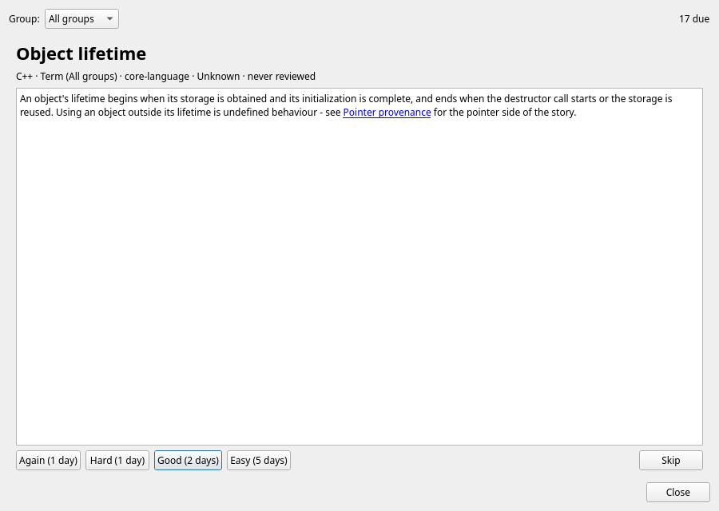
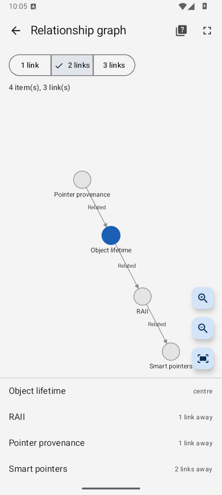
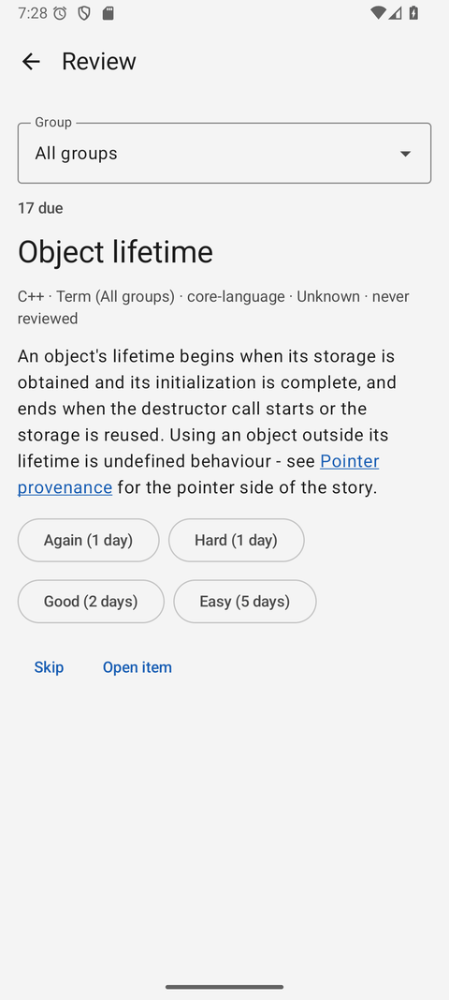

Lexicon
A knowledge dictionary for structured learning and technical note-taking — groups, items, rich metadata and typed links between concepts. One dictionary, three clients: desktop, browser and Android.

Why Lexicon?
Your knowledge deserves more than a flat pile of notes. Lexicon organizes what you learn into a structured, searchable, interlinked dictionary stored locally on your computer.
Local-first storage
Structured data lives in a local SQLite file; images and other files live in the adjacent blobs directory. No cloud or account is needed.
Groups, types and items
Group items into top-level groups such as C++ or Databases, and give them types with ordered typed fields — numbers, dates, enums, files, images.
Rich metadata
Every item carries aliases, tags, flags, properties, a status, an understanding level and a pinned state — so you always know where you stand.
Typed relationships
Connect concepts with links and backlinks typed as Is A, Part Of, Depends On, Related and more — or just write [[wiki links]] in the content.
Relationship graph
See the neighbourhood of any item up to three links away, zoom in and out, take it full screen, and click your way around the graph.
Markdown editor
Write item content in Markdown with a formatting toolbar and a live rendered preview, powered by the md4qt parser.
Images where they belong
An image field holds a diagram or a photo of a whiteboard: a thumbnail in the editor, the picture under the item's content, and full size on request.
Review with spaced repetition
The items due now, one card at a time: the answer on request and a rating that moves the understanding level and sets the next review.
Cards and a quiz
Questions and answers about an item, asked one at a time — for the item alone or everything linked to it — with a Yes or a No that counts how often you knew each one.
Alarms that ring
Reminders with a title, a description and a time. They ring on the desktop, in the browser and on the phone — even when the app is closed — until one dismissal quiets them everywhere.
An Inbox for ideas
A title and a few lines, saved in one step and sorted out later. On Android it works offline too and goes out when the server is back.
Fast search & filters
Search titles, aliases, tags, flags and the content itself — the full-text index ignores diacritics, so prilis finds Příliš. Then narrow it down with a filter per column.
Backups and one-file export
The server backs the dictionary up by itself, keeping snapshots that share unchanged files. Export the whole thing as one documented JSON file, with or without its images.
Built for large datasets
Pagination, sortable columns and per-column filters keep even very large lexicons fast and easy to browse.
Your dictionary everywhere
A Qt-free REST server, a static web client and a native Android app — the same items, reviews and alarms, with revisions that keep two clients from overwriting each other.
Light and dark mode
Switch themes from the View menu — your preference is remembered between sessions. This website has it too, try the moon button above.
Choose your path
The documentation is split into two sections, depending on what you want to do with Lexicon.
For Users
Everything you need to install Lexicon and organize your knowledge like a pro.
- Installation and first launch
- Creating groups and items
- The Markdown content editor
- Tags, flags, aliases, links & backlinks
- Review, cards, alarms and the Inbox
- The server, the web client and the Android app
- Search, filtering, backup, and troubleshooting
For Developers
Dive into the codebase, build from source, and contribute.
- Building with CMake and Qt 6
- Application architecture and source layout
- SQLite schema and the migration system
- Roadmap and TODO list
- Contributing guidelines and license
Up and running in a minute
Lexicon builds from source with CMake and Qt 6. On Debian or Ubuntu it takes three commands:
sudo apt install -y build-essential cmake qt6-base-dev libqt6sql6-sqlite
cmake -S . -B build -DCMAKE_BUILD_TYPE=Release && cmake --build build --target Lexicon -j
./build/LexiconSee it in action
The item editor gives every concept six focused tabs — General, Values, Content, Metadata, Links and Backlinks — and the graph shows how it all hangs together.




Beyond the desktop
The same dictionary, wherever you are:
🖧 LexiconServer
A Qt-free REST server next to your database. It serves your other devices and backs the dictionary up by itself.
🌐 Web client
Static HTML, CSS and JavaScript — no build step. Everything the desktop does, in a browser, down to a phone-sized screen.
📱 Android app
Kotlin and Jetpack Compose: search, edit, review, alarms that ring when the app is closed, and an Inbox that works offline.



